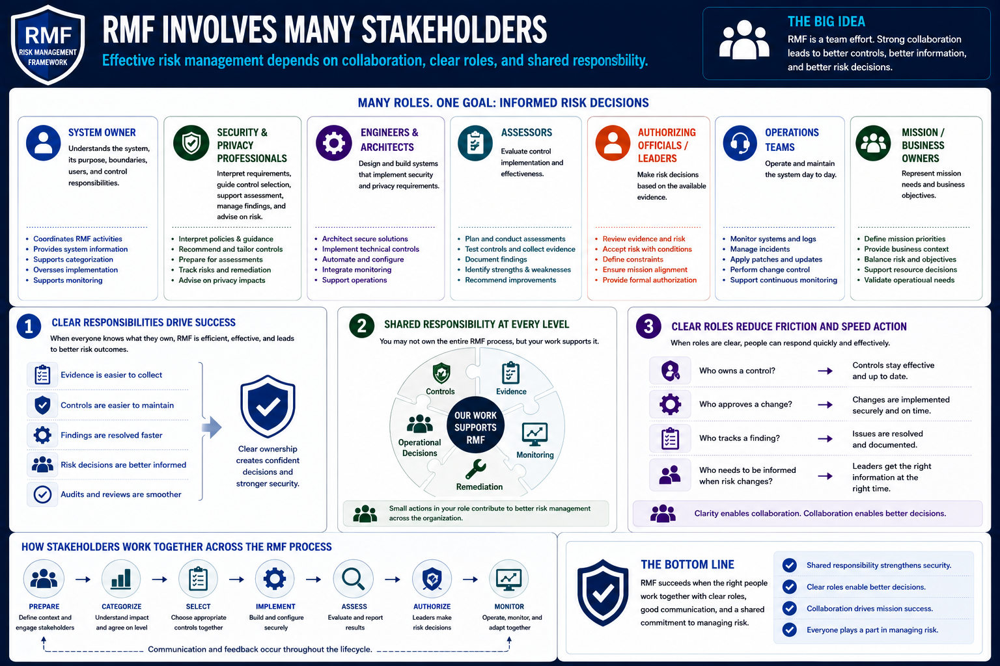

What Is RMF?
Roles and Responsibilities
Connecting to LMS... Progress: in progress
Version 1.0 | Date: 2026-06-16 | Educational overview of Risk Management Framework concepts.

Narration
RMF involves many stakeholders. Effective risk management depends on collaboration between system owners, security professionals, engineers, architects, assessors, privacy personnel, executives, authorizing officials, operations teams, and sometimes mission or business owners.
System owners are typically responsible for understanding the system, its purpose, its boundaries, its users, and its control responsibilities. They help coordinate the information needed for categorization, control selection, implementation, and monitoring.
Security and privacy professionals help interpret requirements, guide control selection, support assessment preparation, manage findings, and advise on risk. Engineers and architects turn many of those requirements into working technical and operational controls.
Assessors evaluate control implementation and effectiveness. They provide findings that help the organization understand strengths, weaknesses, and areas needing remediation.
Authorizing officials or accountable leaders make risk decisions based on the available evidence. Their role is important because risk acceptance is a leadership responsibility, not only a technical one.
Clear responsibilities prevent RMF from becoming a confusing paperwork exercise. When everyone knows what they own, evidence is easier to collect, controls are easier to maintain, and risk decisions are better informed.
For individual employees, the key takeaway is shared responsibility. You may not own the entire RMF process, but your work may support controls, evidence, monitoring, remediation, or operational decisions.
Clear role definition also reduces friction. People can respond faster when they know who owns a control, who approves a change, who tracks a finding, and who needs to be informed when risk changes.